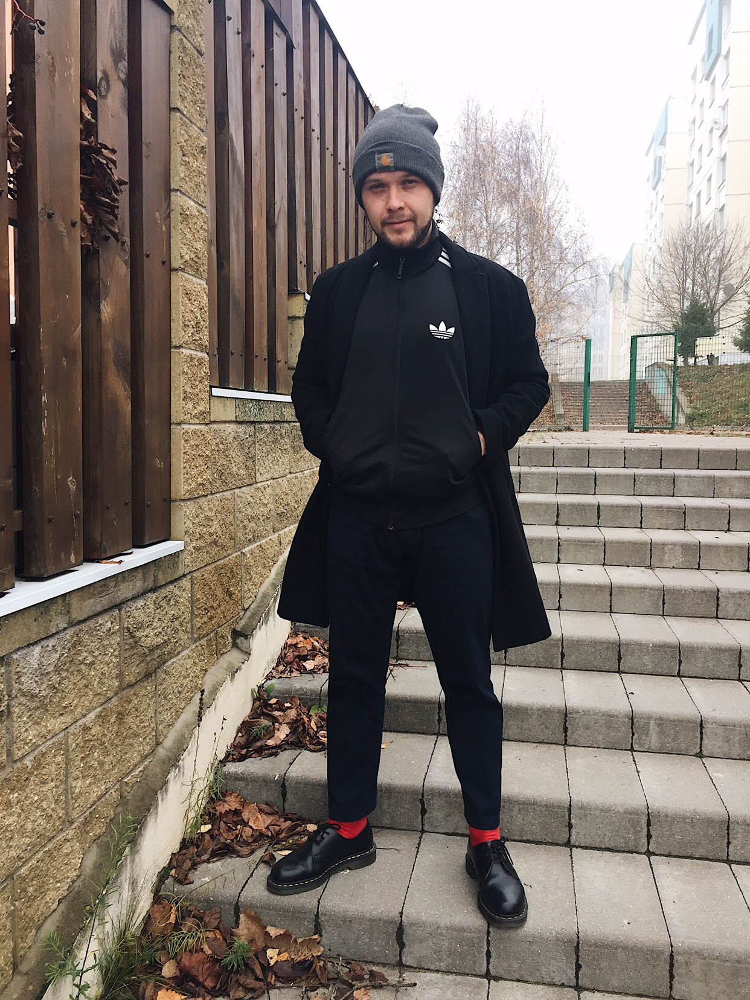
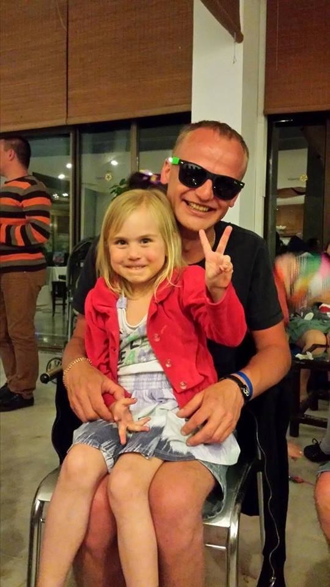

ОТЗЫВЫ:
- Иван Девойно
Xiaomi Redmi Note 5 принял водные процедуры/ Восстановили работоспособность,заменен разъём microUSB, восстановлен коннектор аккумулятора, межплатный шлейф, чистка от влаги, пыли, окисления, только не смогли поменять датчик приближения, новые отсутствуют априори, а донора пока нет. Работой доволен.
-
Михаил Морозевич

Пришёл в сервисный центр, проблема была с iPhone 6, мастер Алексей сделал все при мне и очень оперативно, не дорого, хотя в другом сервисе цену назвали в несколько раз выше, результатом доволен, сервис рекомендую
- Мария Ермакова
Замена акб Samsung Galaxy S7. Предварительно по телефону договорились о том что, цена вместе с работой будет 75р! Но когда я пришла в сервис, мне сказали что цена будет 85р. Мастер пытался это оправдать более высокой закупочной ценой акб. По итогу заменили за 75р но осадок остался! Разберитесь пожалуйста с вашим ценообразованием!
- Дмитрий Шарлай

Хочу поблагодарить ребят из этого сервис-центра, которые делают свою работу на отлично! Сначала сдавал один из своих телефонов, надо было поменять динамик. Потом второй телефон отдал, там кнопка не работала. Телефоны очень древние на сегодняшний день (любители винтажа поймут), поэтому мало кто вообще хотел браться за работу, да и цены гнули в разы дороже телефонов. С этим сервис-центром вообще вопросов не возникло. Взялись за оба телефона, все сделали очень быстро, нареканий нет.
- Ксения Латогурская
Сдавала телефон Xiaomi с разбытым стеклом. Быстро починили, на третий день утром позвонили и сообщили, что ремонт завершён. Я довольна, работа выполнена качественно. Очень боялась ошибиться в выборе сервиса, теперь не жалею, что обратилась именно к этим ребятам. Спасибо большое вам!